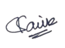

Cover Letter
To Whom It May Concern,
I'm thrilled at the prospect of building and supporting cutting-edge
technology and solutions with truly global implications. With a
background in computer science and experience of two projects where I
got to interact with customers from a variety of countries, I have
acquired robust problem-solving and communication abilities.
In one of my positions, I was engaged in the whole life cycle of an
agricultural cloud project, from initial estimation through building and
deploying the finished product. I was specifically recognized for
consistently meeting deadlines and delivering customer deliverables on
time.
Thank you for your time and consideration. My work experiences, coupled
with my affinity to be curious and learn, would make me an asset to your
firm. I can be easily reached at your convenience by email
workwsaumik@gmail.com
or by telephone (+91)8879358212.
Sincerely,
